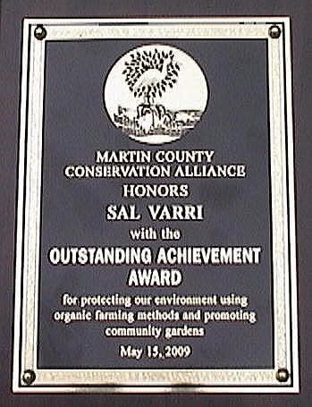

MISSION STATEMENT
Varri Green Farm is a pristine twenty-acre farm across the street from Lake Okeechobee, on the old natural berm from before they built the Herbert Hoover Dike that holds the lake water in. Centuries of storms laid down about three feet of black muck here — the soil where we grow gardens and plant fruit trees. We tend more than sixty varieties of fruit — and we're adding more — and we grow every vegetable we can in Zone 10, both from around the world. We use no herbicides, pesticides, or chemicals — everything is of the earth and natural. This is basically not a profit farm — a teaching farm, you might say. Running since 2003, the farm has hosted sweat lodges, Slow Food dinners, musical events, children's workshops, and tours of the gardens, fruit trees, and more. Sal and volunteers have worked the green markets at Fort Pierce Marina and West Palm Beach Gardens for over fifteen years, and may return to market again. Our mission is to help people learn self-sustainability, community, and homesteading; to show what real food grown without chemical shortcuts looks and tastes like; and to make the world a better place through touching grass and getting dirty — so people can see past the ultra-processed products corporations push and choose food that comes from the earth instead. This farm will be left to the public, with people working the land so the teaching continues. Come lend a hand.
Outstanding Achievement Award

Honored by the Martin County Conservation Alliance on May 15, 2009, for protecting our environment using organic farming methods and promoting community gardens.
IN THE NEWS
- Slow Food Gold & Treasure CoastJuly 31, 2013Varri Green Farm received the chapter's “Snail of Approval” award, given to local producers who contribute to the quality, authenticity and sustainability of the food we eat.TCPalm: Snail of Approval winners (July 31, 2013)
- Agri-Leader (Highlands Today farm edition)March 2013
“Sal Varri believes in growing food naturally, without chemicals and allowing every creature to be part of the farm.”
- The Palm Beach Post — “An Ode to Florida's Farms and Fields”October 2, 2012 · by Liz BalmasedaA look at a new Florida farm-to-kitchen cookbook that included recipes and passages from Varri Green Farm.Read at palmbeachpost.com (subscription may be required)
- Seabreeze Publications — LifestylesApril 2011A feature on teaching children to make better food choices through the farm's workshops.
- The Palm Beach Post — “Swamp Gardener” columnApril 16, 2006 · by Cash Cashion
“Sal and Holly Varri of Varri Green Farm have some fine produce and it's organic... They're my kind of people (and gardeners).”
Read the column (Wayback Machine archive)